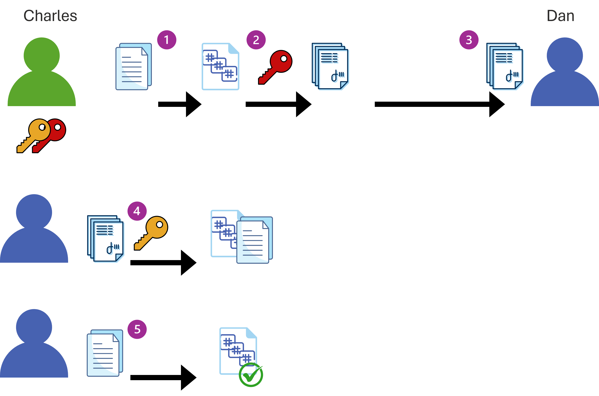

The head of IT wants employees to send messages reliably with integrity and authenticity using hashing and digital signatures.
Company Requirements:

System Admin: Charles and Dan use digital signatures to ensure message authenticity and integrity. Complete the process below.